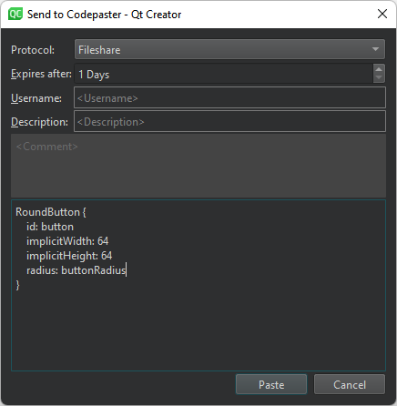
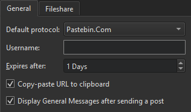

Paste and fetch code snippets
To paste snippets of code or whole files to a server or fetch them from the server, use one of the following code pasting services:
- DPaste.com
- Pastebin.com
For example, you might ask colleagues to review a change that you plan to submit to a version control system. If you use the Git version control system, create a diff view by going to Tools > Git > Local Repository > Diff. Then, upload its contents to the server by going to Tools > Code Pasting > Paste Snippet.
The reviewers can retrieve the code snippet by selecting Tools > Code Pasting > Fetch Snippet. If they have the project currently opened in Qt Creator, they can apply and test the change by going to Tools > Git > Local Repository > Patch > Apply from Editor.
Paste snippets
To paste a snippet of code onto the server:
- Go to Tools > Code Pasting > Paste Snippet or press Alt+C,Alt+P.

- In Protocol, select the code pasting service to use.
- In Expires after, specify the time to keep the pasted snippet on the server.
- In Username and Description, enter your username and add information about the pasted content.
- Check and edit the content to paste.
- Select Paste.
By default, Qt Creator copies the URL of the snippet to the clipboard and displays the URL in General Messages.
To paste a diff, right-click a chunk and select Send Chunk to CodePaster in the context menu.
Fetch snippets
To fetch a snippet of code from the server:
- Go to Tools > Code Pasting > Fetch Snippet or press Alt+C,Alt+F.
- Select the snippet to fetch from the list.
To fetch the content stored at a URL, select Tools > Code Pasting > Fetch from URL.
Set code pasting preferences
To set preferences for a code pasting service:
- Go to Preferences > Code Pasting > General.

- In Default protocol, select a code pasting service to use by default.
- In Username, enter your username.
- In Expires after, specify the time to keep the pasted snippet on the server.
- Select Copy-paste URL to clipboard to copy the URL of the post on the code pasting service to the clipboard when you paste a post.
- Select Display General Messages after sending a post to display the URL in General Messages when you paste a post.
Set a shared network drive for code pasting
Go to Preferences > Code Pasting > Fileshare to specify the path to a shared network drive.
The code snippets are copied to the drive as simple files. You have to delete obsolete files from the drive manually.
See also Compare files and Git.